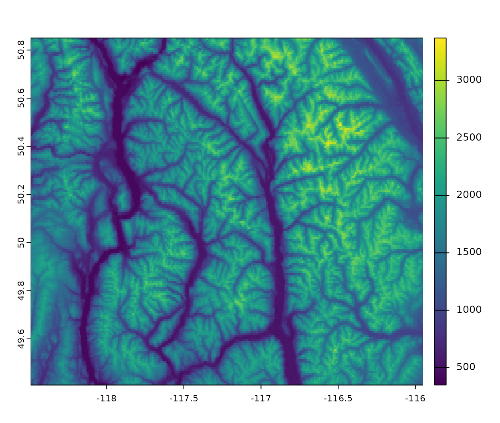
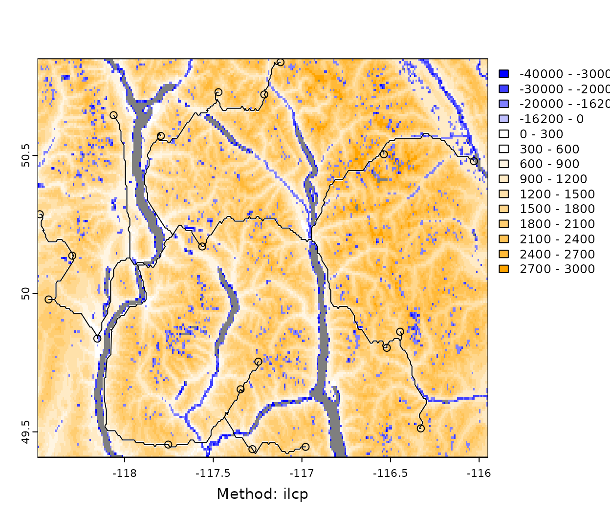
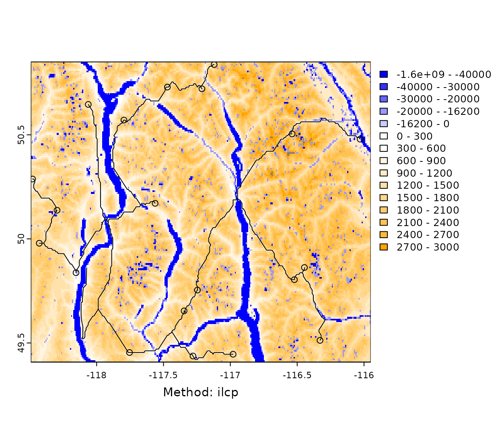

In this tutorial we explore the gradePenaltyFn by
attempting to build roads to randomly selected locations in a
mountainous region of British Columbia, Canada. While the elevation and
landcover data used is real, the roads and landings are not and
projected roads are not expected to match observed roads. In most real
applications, an established existing road network will constrain the
locations of new access roads. gradePenaltyFn uses a
simplified version of the grade penalty approach taken by Anderson and
Nelson (2004) to penalize roads that go up steep slopes and encourage
roads to follow the contours of the landscape.
To use the grade penalty function we need to supply a raster to the
weightRaster argument that contains elevation and has other
barriers (eg water bodies) included in the raster as negative or
NA values. In this example we will use an elevation and
proportion water data set downloaded with the geodata
package and cropped to an example area in British Columbia, Canada that
is included in the package.
library(roads)
library(terra)
#> terra 1.8.93
library(dplyr)
#>
#> Attaching package: 'dplyr'
#> The following objects are masked from 'package:terra':
#>
#> intersect, union
#> The following objects are masked from 'package:stats':
#>
#> filter, lag
#> The following objects are masked from 'package:base':
#>
#> intersect, setdiff, setequal, union
library(sf)
#> Linking to GEOS 3.12.1, GDAL 3.8.4, PROJ 9.4.0; sf_use_s2() is TRUE
# prep the terra rasters for use
dem_example <- prepExData(dem_example)The elevation data shows that this is a mountainous region.
plot(dem_example$ex_elev)
And the proportion of the landscape covered by water in each cell shows that there are several long narrow lakes crossing the landscape.
plot(dem_example$ex_wat)gradePenaltyFn requires a single raster as input but
allows factors other than grade that will affect road construction to be
included in the raster as negative values and barriers where no road
construction is possible to be included as NA values. In
this example we will assume that road construction is impossible for
cells where the proportion of water is > 50%. Then we set areas with
less than 1% water to NA so that the grade penalty will still apply in
this case. We also need to get the penalty for water crossing on to a
similar scale as the grade penalty in this case we will assume the same
base cost of $16178 and the same penalty of $504 for every percentage
point increase in percent water. Note this is just an example and there
are certainly better data sources for the locations and costs of stream
crossings.
# set water to NA when a cell is > 50% water
wat_use <- classify(dem_example$ex_wat, matrix(c(0.5, 1, NA), nrow = 1))
# set elev to NA when water is NA
elev_use <- mask(dem_example$ex_elev, wat_use)
# Now change water to NA when it is < 1% water
wat_use <- mask(wat_use, wat_use < 0.01, maskvalue = TRUE)
wat_use <- (wat_use *100) * -504 - 16178
plot(wat_use)We then combine the two rasters together by setting elevation to 0 when there is a water penalty and summing them.
# set elev to 0 when wat is NA
elev_use <- mask(elev_use, wat_use, inverse = TRUE, updatevalue = 0)
# add wat_use to elev when not NA
wt_rast <- sum(elev_use, wat_use, na.rm = TRUE)
par(mar = c(0,0,0,0.25))
plot(wt_rast, breaks = c(-40000, -30000, -20000, -16178, 0, 1:10*300, NA),
col = c(terra::map.pal("blues", 5) %>% rev(), terra::map.pal("oranges", 10)),
colNA = "grey50", mar = c(2, 2, 2, 6.5))Next we randomly select points to serve as landings (i.e. locations
to build roads to). We limit the landings to being at less than 2000m
elevation and less than 1% water and then randomly select points. We use
a stratified sample below since this is the easiest way to get a sample
of just the cells that are TRUE in
for_area
# Get landing points
for_area <- is.na(wat_use) & !is.na(elev_use) & elev_use < 2000
names(for_area) <- "forest"
# set seed to make repeatable
set.seed(1235)
lnds <- spatSample(for_area, 20, method = "stratified", as.points = TRUE,
ext = ext(for_area)-0.001) %>%
st_as_sf() %>%
filter(forest == 1) %>%
mutate(id = 1:n())
plot(wt_rast, breaks = c(-40000, -30000, -20000, -16178, 0, 1:10*300),
col = c(terra::map.pal("blues", 5) %>% rev(), terra::map.pal("oranges", 10)),
colNA = "grey50", mar = c(2, 2, 2, 6.5))
plot(lnds, add = TRUE, col = "red")
#> Warning in plot.sf(lnds, add = TRUE, col = "red"): ignoring all but the first
#> attributeFinally, we create an initial road to serve as a starting point. This
can be done interactively using terra::draw but we saved
the result using dput to make it re-runnable.
# Get starting road
# create line interactively
# line <- draw("line")
#
# line <- st_as_sf(line)
# get line non-interactively
rd_in <- structure(list(
geometry = structure(list(
structure(c(-118.103238840217, -118.103238840217, -118.112765313949, -118.115940805193,
-118.115940805193, -118.106414331461, -118.106414331461, -118.100063348973,
-118.077834910265, -118.074659419021,
49.5276240233455, 49.5785159559446, 49.6090511155041,
49.6355149204556, 49.6945495622705, 49.6965852395745,
49.7108349807022, 49.7637625906053, 49.780048009037,
49.8614751011955),
dim = c(10L, 2L),
class = c("XY", "LINESTRING", "sfg"))),
n_empty = 0L, class = c("sfc_LINESTRING", "sfc"),
precision = 0,
bbox = structure(c(xmin = -118.115940805193,
ymin = 49.5276240233455,
xmax = -118.074659419021,
ymax = 49.8614751011955), class = "bbox"),
crs = structure(list(input = NA_character_, wkt = NA_character_),
class = "crs"))),
row.names = 1L, sf_column = "geometry",
agr = structure(integer(0), class = "factor",
levels = c("constant", "aggregate","identity"),
names = character(0)), class = c("sf", "data.frame")) %>%
st_set_crs(st_crs(lnds))Now we are ready to project the locations of roads connecting each landing to our initial road network.
rd_proj <- projectRoads(lnds, wt_rast, rd_in, weightFunction = gradePenaltyFn,
roadsInWeight = FALSE, roadMethod = "ilcp")
#> Burning in roads to weightRaster from sfOur first attempt results in an error because one or more landings
cannot be reached without traversing a grade of more than 20% which is
the default value of limit in
gradePenaltyFn(). To avoid this we can increase
limit or change limitWeight to something other
than NA. Below we try both setting limit = 30
and limitWeight = 40000^2. Which have slightly different
results.
rd_proj <- projectRoads(lnds, wt_rast, rd_in, weightFunction = gradePenaltyFn,
roadsInWeight = FALSE, roadMethod = "ilcp", limit = 30)
#> Burning in roads to weightRaster from sf
plotRoads(rd_proj, breaks = c(-40000, -30000, -20000, -16178, 0, 1:10*300),
col = c(terra::map.pal("blues", 5) %>% rev(), terra::map.pal("oranges", 10)),
colNA = "grey50", mar = c(2, 2, 2, 6.5))
rd_proj3 <- projectRoads(lnds, wt_rast, rd_in, weightFunction = gradePenaltyFn,
roadsInWeight = FALSE, roadMethod = "ilcp", limitWeight = 40000^2)
#> Burning in roads to weightRaster from sf
plotRoads(rd_proj3, breaks = c(-40000, -30000, -20000, -16178, 0, 1:10*300),
col = c(terra::map.pal("blues", 5) %>% rev(), terra::map.pal("oranges", 10)),
colNA = "grey50", mar = c(2, 2, 2, 6.5))
Another challenge can occur if an area is not accessible without
crossing cells that are NA. Below we set all areas with
greater than 10% water to NA.
# set > 10% water to NA
wat_10 <- classify(dem_example$ex_wat, matrix(c(0.1, 1, NA), nrow = 1))
wt_rast <- mask(wt_rast, wat_10)
plot(wt_rast, breaks = c(-40000, -30000, -20000, -16178, 0, 1:10*300),
col = c(terra::map.pal("blues", 5) %>% rev(), terra::map.pal("oranges", 10)),
colNA = "grey50", mar = c(2, 2, 2, 6.5))
projectRoads(lnds, wt_rast, rd_in, weightFunction = gradePenaltyFn,
roadsInWeight = FALSE, roadMethod = "ilcp", limit = 30)
#> Burning in roads to weightRaster from sf
#> Warning in igraph::shortest_paths(sim$g, path.list[1], path.list[2], out =
#> "both"): At vendor/cigraph/src/paths/dijkstra.c:534 : Couldn't reach some
#> vertices.
#> Warning in igraph::shortest_paths(sim$g, path.list[1], path.list[2], out =
#> "both"): At vendor/cigraph/src/paths/dijkstra.c:534 : Couldn't reach some
#> vertices.
#> Warning in igraph::shortest_paths(sim$g, path.list[1], path.list[2], out =
#> "both"): At vendor/cigraph/src/paths/dijkstra.c:534 : Couldn't reach some
#> vertices.
#> Warning in igraph::shortest_paths(sim$g, path.list[1], path.list[2], out =
#> "both"): At vendor/cigraph/src/paths/dijkstra.c:534 : Couldn't reach some
#> vertices.
#> Warning in igraph::shortest_paths(sim$g, path.list[1], path.list[2], out =
#> "both"): At vendor/cigraph/src/paths/dijkstra.c:534 : Couldn't reach some
#> vertices.
#> Error:
#> ! NA values in weightRaster along paths. Check for disconnected clumps in weightRaster. If weightFunction=gradePenaltyFn, try adjusting limit or setting limitWeight to high value that is not NA.To address this we can change NA values to an
arbitrarily large negative value to prevent crossing unless
required.
wt_rast <- subst(wt_rast, from = NA, to = -40000^2)
rd_proj2 <- projectRoads(lnds, wt_rast, rd_in, weightFunction = gradePenaltyFn,
roadsInWeight = FALSE, roadMethod = "ilcp", limit = 30)
#> Burning in roads to weightRaster from sf
plotRoads(rd_proj2, breaks = c(-40000^2, -40000, -30000, -20000, -16178, 0, 1:10*300),
col = c(terra::map.pal("blues", 6) %>% rev(), terra::map.pal("oranges", 10)),
colNA = "grey50", mar = c(2, 2, 2, 8.5))
References
Anderson AE, Nelson J (2004) Projecting vector-based road networks with a shortest path algorithm. Canadian Journal of Forest Research 34:1444–1457. https://doi.org/10.1139/x04-030